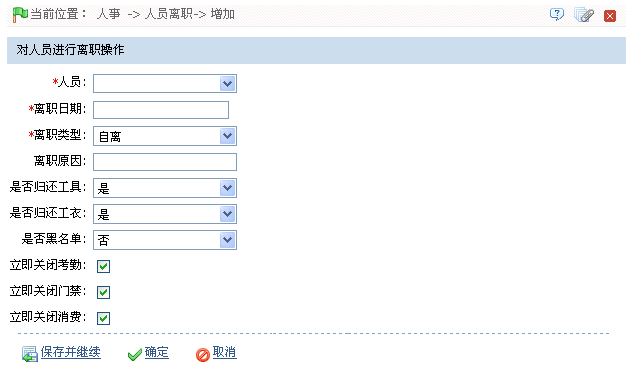
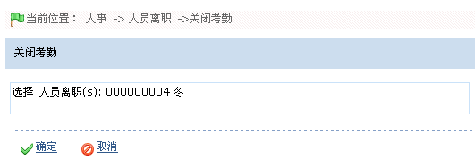
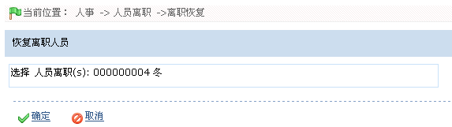

4.5 人员离职
人员离职操作包括新增人员离职、离职恢复、关闭门禁、关闭考勤和关闭消费操作。
4.5.1 新增人员离职
1、单击【人事】 【人员离职】，进入人员离职页面，然后单击人员离职页面上的【新增】图标，进入新增人员离职页面，如下图所示：
【人员离职】，进入人员离职页面，然后单击人员离职页面上的【新增】图标，进入新增人员离职页面，如下图所示：

根据需要进行离职操作，具体操作方法如下：
人员：单击 按钮，在弹出的人员选择框中选择需离职的人员。人员的选择，请参见附录1 常用操作中的1. 人员选择。
按钮，在弹出的人员选择框中选择需离职的人员。人员的选择，请参见附录1 常用操作中的1. 人员选择。
离职日期：选择离职日期。日期的选择，请参见附录1 常用操作中的2. 选择日期。
离职原因：根据需要输入离职原因，可为空。
是否归还工具、是否归还工衣：默认状态下为“是”，可单击 按钮，在弹出的下拉框中选择为“否”。
按钮，在弹出的下拉框中选择为“否”。
是否黑名单：默认状态下为“否”，即仅离职单不加入黑名单。（加入黑名单的离职人员，不能进行离职恢复操作。）
立即关闭考勤、门禁、消费：默认状态下，人员离职即立即关闭考勤、门禁和消费，用户可根据需要选择不立即关闭考勤、门禁或消费。（不打勾选中，即不关闭。）
2、设置完成后，单击【确定】按钮保存并返回人员离职页面，此时离职人员列表中将显示刚添加的离职人员。
4.5.2 关闭门禁、关闭考勤、关闭消费
对新增离职时未立即关闭门禁、考勤或消费的人员，可以采用如下方法关闭（以关闭考勤为例）：
1、在人员离职页面的，离职人员列表中，单击选中需关闭考勤的离职人员，然后单击离职人员列表上方的【关闭考勤】按钮，进入关闭考勤的确认页面，如下图所示：

2、单击【确定】按钮，确认并关闭被选中的离职人员的考勤。在服务器命令下发后，将人员从其所属的（考勤、门禁和消费）区域下的所有设备中删除。
4.5.3 离职恢复
将离职人员从离职人员列表恢复到人员列表，并从离职人员列表中删除，并恢复其档案。
1、在人员离职页面的，离职人员列表中，单击选中需离职恢复的离职人员，然后单击离职人员列表上方的【离职恢复】按钮，进入离职恢复的确认页面，如下图所示：

2、单击【确定】按钮，确认并恢复该离职人员信息至（在职）人员列表中。
 注意：（1）、进入黑名单的人员不能通过“离职恢复”重新恢复到人员列表。（2）、入黑名单的人员不能再入职。
注意：（1）、进入黑名单的人员不能通过“离职恢复”重新恢复到人员列表。（2）、入黑名单的人员不能再入职。